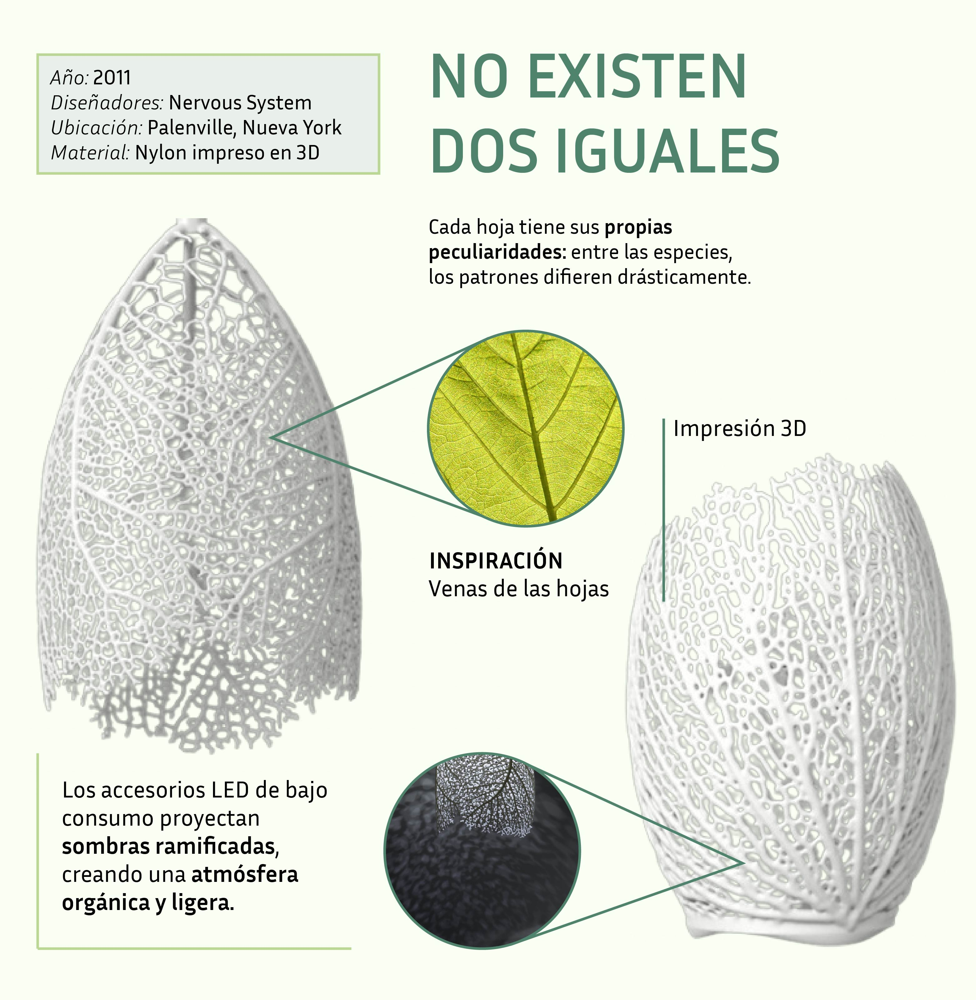

UNA SERIE DE LÁMPARAS GENERATIVAS
BIOMÍMESIS
El proyecto se enmarca en la biomímesis, entendida como el estudio y aplicación de los principios funcionales de la naturaleza para resolver problemas de diseño. Más allá de reproducir una forma natural,Hyphae Lamps emula los procesos de crecimiento, trasladando el comportamiento de las células vegetales al lenguaje del algoritmo.
FUNCIONAMIENTO

Las lámparas se cultivan en un software de diseño personalizado que creamos en C++ usando CGAL y Cinder. La red de ramificación evoca hojas, coral y raíces sin replicar con precisión ninguna forma natural. Cada lámpara comienza desde un volumen base y un conjunto de puntos de raíz; la estructura emerge a través de un proceso iterativo a medida que las raíces crecen en un entorno lleno de auxina.
COLONIZACIÓN DEL ESPACIO
Proceso de crecimiento iterativo de redes de líneas ramificadas, basado en la distribución de fuentes de auxina que atraen estos elementos, evocando patrones de expansión vegetal.


EFICIENCIA
Cada lámpara:
- Ilumina mediante un conjunto de 3 LED Cree.
- Consume solo 3,6 W de electricidad.
- Su vida útil estimada supera las 50.000 horas (casi 6 años de uso continuo).
Hyphae Lamps representa la fusión entre mundos que parecían distantes. La observación se volvió clave bajo la metodología del diseño: cómo crece, se adapta y se organiza la vida para ser abstraída y traducida a nuevos lenguajes visuales. Sencillez y sensibilidad en un proyecto digital que evoca un proceso vivo, generando entre luces y sombras un ambiente que entrega confort y curiosidad ante lo orgánico y cotidiano que suele pasar desapercibido. Busca reflexionar sobre la belleza existente en los patrones naturales y cómo el ser humano puede colaborar con la naturaleza sin invadirla.